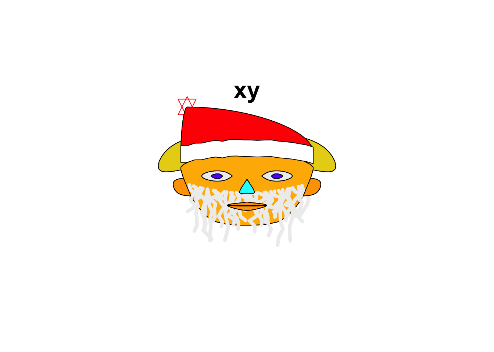
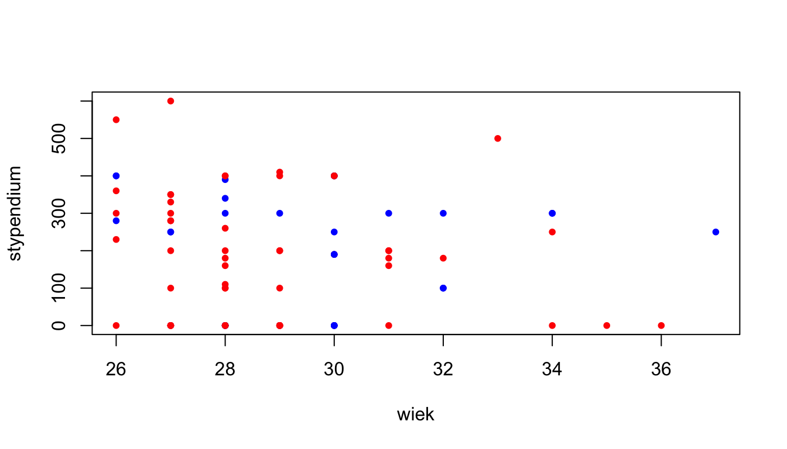
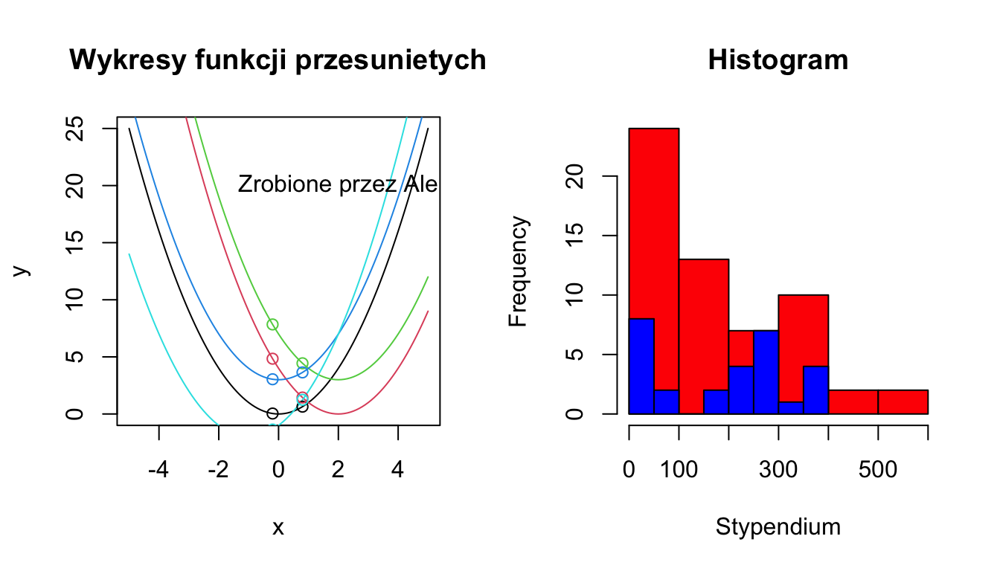
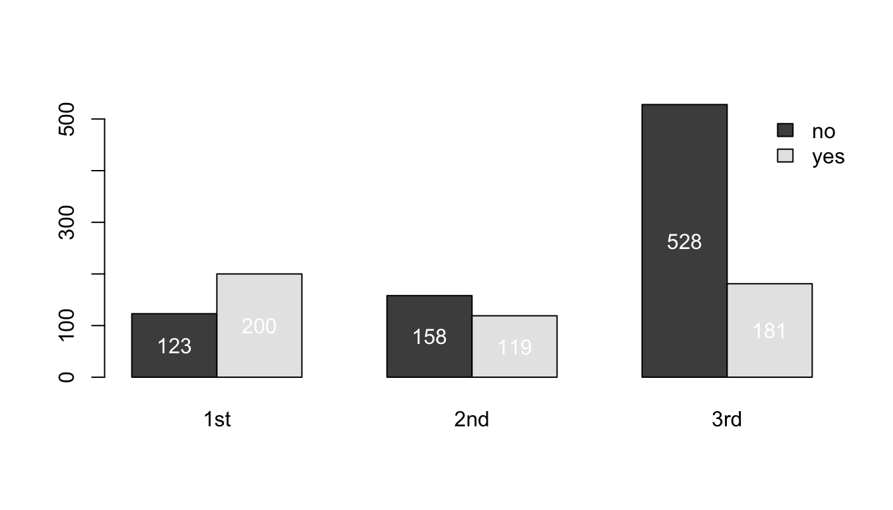

Last updated: 2023-01-16
Checks: 7 0
Knit directory: prezentacja_2023/
This reproducible R Markdown analysis was created with workflowr (version 1.7.0). The Checks tab describes the reproducibility checks that were applied when the results were created. The Past versions tab lists the development history.
Great! Since the R Markdown file has been committed to the Git repository, you know the exact version of the code that produced these results.
Great job! The global environment was empty. Objects defined in the global environment can affect the analysis in your R Markdown file in unknown ways. For reproduciblity it’s best to always run the code in an empty environment.
The command set.seed(20230116) was run prior to running
the code in the R Markdown file. Setting a seed ensures that any results
that rely on randomness, e.g. subsampling or permutations, are
reproducible.
Great job! Recording the operating system, R version, and package versions is critical for reproducibility.
Nice! There were no cached chunks for this analysis, so you can be confident that you successfully produced the results during this run.
Great job! Using relative paths to the files within your workflowr project makes it easier to run your code on other machines.
Great! You are using Git for version control. Tracking code development and connecting the code version to the results is critical for reproducibility.
The results in this page were generated with repository version 59c48a5. See the Past versions tab to see a history of the changes made to the R Markdown and HTML files.
Note that you need to be careful to ensure that all relevant files for
the analysis have been committed to Git prior to generating the results
(you can use wflow_publish or
wflow_git_commit). workflowr only checks the R Markdown
file, but you know if there are other scripts or data files that it
depends on. Below is the status of the Git repository when the results
were generated:
Ignored files:
Ignored: .DS_Store
Ignored: .Rhistory
Untracked files:
Untracked: kod.R
Untracked: prezentacja_joanna.key
Untracked: prezentacje/
Untracked: zdjecia do prezentacji/
Unstaged changes:
Deleted: Zajecia_R/.Rprofile
Deleted: Zajecia_R/.gitattributes
Deleted: Zajecia_R/.gitignore
Deleted: Zajecia_R/README.md
Deleted: Zajecia_R/Zajecia_R.Rproj
Deleted: Zajecia_R/_workflowr.yml
Deleted: Zajecia_R/analysis/_site.yml
Deleted: Zajecia_R/analysis/about.Rmd
Deleted: Zajecia_R/analysis/index.Rmd
Deleted: Zajecia_R/analysis/license.Rmd
Deleted: Zajecia_R/code/README.md
Deleted: Zajecia_R/data/README.md
Deleted: Zajecia_R/docs/.nojekyll
Deleted: Zajecia_R/output/README.md
Deleted: zajecia/.Rprofile
Deleted: zajecia/.gitattributes
Deleted: zajecia/.gitignore
Deleted: zajecia/README.md
Deleted: zajecia/_workflowr.yml
Deleted: zajecia/analysis/_site.yml
Deleted: zajecia/analysis/about.Rmd
Deleted: zajecia/analysis/index.Rmd
Deleted: zajecia/analysis/license.Rmd
Deleted: zajecia/analysis/wizualizacje.Rmd
Deleted: zajecia/analysis/wprowadzenie.Rmd
Deleted: zajecia/code/README.md
Deleted: zajecia/data/README.md
Deleted: zajecia/data/studenci.xlsx
Deleted: zajecia/docs/.nojekyll
Deleted: zajecia/docs/about.html
Deleted: zajecia/docs/figure/wizualizacje.Rmd/unnamed-chunk-1-1.png
Deleted: zajecia/docs/figure/wizualizacje.Rmd/unnamed-chunk-1-2.png
Deleted: zajecia/docs/figure/wizualizacje.Rmd/unnamed-chunk-1-3.png
Deleted: zajecia/docs/figure/wizualizacje.Rmd/unnamed-chunk-1-4.png
Deleted: zajecia/docs/figure/wizualizacje.Rmd/unnamed-chunk-2-1.png
Deleted: zajecia/docs/figure/wizualizacje.Rmd/unnamed-chunk-2-2.png
Deleted: zajecia/docs/figure/wizualizacje.Rmd/unnamed-chunk-2-3.png
Deleted: zajecia/docs/figure/wizualizacje.Rmd/unnamed-chunk-2-4.png
Deleted: zajecia/docs/figure/wprowadzenie.Rmd/unnamed-chunk-1-1.png
Deleted: zajecia/docs/figure/wprowadzenie.Rmd/unnamed-chunk-7-1.png
Deleted: zajecia/docs/figure/wprowadzenie.Rmd/unnamed-chunk-7-2.png
Deleted: zajecia/docs/figure/wprowadzenie.Rmd/unnamed-chunk-7-3.png
Deleted: zajecia/docs/index.html
Deleted: zajecia/docs/license.html
Deleted: zajecia/docs/site_libs/bootstrap-3.3.5/css/bootstrap-theme.css
Deleted: zajecia/docs/site_libs/bootstrap-3.3.5/css/bootstrap-theme.css.map
Deleted: zajecia/docs/site_libs/bootstrap-3.3.5/css/bootstrap-theme.min.css
Deleted: zajecia/docs/site_libs/bootstrap-3.3.5/css/bootstrap.css
Deleted: zajecia/docs/site_libs/bootstrap-3.3.5/css/bootstrap.css.map
Deleted: zajecia/docs/site_libs/bootstrap-3.3.5/css/bootstrap.min.css
Deleted: zajecia/docs/site_libs/bootstrap-3.3.5/css/cerulean.min.css
Deleted: zajecia/docs/site_libs/bootstrap-3.3.5/css/cosmo.min.css
Deleted: zajecia/docs/site_libs/bootstrap-3.3.5/css/darkly.min.css
Deleted: zajecia/docs/site_libs/bootstrap-3.3.5/css/flatly.min.css
Deleted: zajecia/docs/site_libs/bootstrap-3.3.5/css/fonts/Lato.ttf
Deleted: zajecia/docs/site_libs/bootstrap-3.3.5/css/fonts/LatoBold.ttf
Deleted: zajecia/docs/site_libs/bootstrap-3.3.5/css/fonts/LatoItalic.ttf
Deleted: zajecia/docs/site_libs/bootstrap-3.3.5/css/fonts/NewsCycle.ttf
Deleted: zajecia/docs/site_libs/bootstrap-3.3.5/css/fonts/NewsCycleBold.ttf
Deleted: zajecia/docs/site_libs/bootstrap-3.3.5/css/fonts/OpenSans.ttf
Deleted: zajecia/docs/site_libs/bootstrap-3.3.5/css/fonts/OpenSansBold.ttf
Deleted: zajecia/docs/site_libs/bootstrap-3.3.5/css/fonts/OpenSansBoldItalic.ttf
Deleted: zajecia/docs/site_libs/bootstrap-3.3.5/css/fonts/OpenSansItalic.ttf
Deleted: zajecia/docs/site_libs/bootstrap-3.3.5/css/fonts/OpenSansLight.ttf
Deleted: zajecia/docs/site_libs/bootstrap-3.3.5/css/fonts/OpenSansLightItalic.ttf
Deleted: zajecia/docs/site_libs/bootstrap-3.3.5/css/fonts/Raleway.ttf
Deleted: zajecia/docs/site_libs/bootstrap-3.3.5/css/fonts/RalewayBold.ttf
Deleted: zajecia/docs/site_libs/bootstrap-3.3.5/css/fonts/Roboto.ttf
Deleted: zajecia/docs/site_libs/bootstrap-3.3.5/css/fonts/RobotoBold.ttf
Deleted: zajecia/docs/site_libs/bootstrap-3.3.5/css/fonts/RobotoLight.ttf
Deleted: zajecia/docs/site_libs/bootstrap-3.3.5/css/fonts/RobotoMedium.ttf
Deleted: zajecia/docs/site_libs/bootstrap-3.3.5/css/fonts/SourceSansPro.ttf
Deleted: zajecia/docs/site_libs/bootstrap-3.3.5/css/fonts/SourceSansProBold.ttf
Deleted: zajecia/docs/site_libs/bootstrap-3.3.5/css/fonts/SourceSansProItalic.ttf
Deleted: zajecia/docs/site_libs/bootstrap-3.3.5/css/fonts/SourceSansProLight.ttf
Deleted: zajecia/docs/site_libs/bootstrap-3.3.5/css/fonts/Ubuntu.ttf
Deleted: zajecia/docs/site_libs/bootstrap-3.3.5/css/journal.min.css
Deleted: zajecia/docs/site_libs/bootstrap-3.3.5/css/lumen.min.css
Deleted: zajecia/docs/site_libs/bootstrap-3.3.5/css/paper.min.css
Deleted: zajecia/docs/site_libs/bootstrap-3.3.5/css/readable.min.css
Deleted: zajecia/docs/site_libs/bootstrap-3.3.5/css/sandstone.min.css
Deleted: zajecia/docs/site_libs/bootstrap-3.3.5/css/simplex.min.css
Deleted: zajecia/docs/site_libs/bootstrap-3.3.5/css/spacelab.min.css
Deleted: zajecia/docs/site_libs/bootstrap-3.3.5/css/united.min.css
Deleted: zajecia/docs/site_libs/bootstrap-3.3.5/css/yeti.min.css
Deleted: zajecia/docs/site_libs/bootstrap-3.3.5/fonts/glyphicons-halflings-regular.eot
Deleted: zajecia/docs/site_libs/bootstrap-3.3.5/fonts/glyphicons-halflings-regular.svg
Deleted: zajecia/docs/site_libs/bootstrap-3.3.5/fonts/glyphicons-halflings-regular.ttf
Deleted: zajecia/docs/site_libs/bootstrap-3.3.5/fonts/glyphicons-halflings-regular.woff
Deleted: zajecia/docs/site_libs/bootstrap-3.3.5/fonts/glyphicons-halflings-regular.woff2
Deleted: zajecia/docs/site_libs/bootstrap-3.3.5/js/bootstrap.js
Deleted: zajecia/docs/site_libs/bootstrap-3.3.5/js/bootstrap.min.js
Deleted: zajecia/docs/site_libs/bootstrap-3.3.5/js/npm.js
Deleted: zajecia/docs/site_libs/bootstrap-3.3.5/shim/html5shiv.min.js
Deleted: zajecia/docs/site_libs/bootstrap-3.3.5/shim/respond.min.js
Deleted: zajecia/docs/site_libs/header-attrs-2.18/header-attrs.js
Deleted: zajecia/docs/site_libs/highlightjs-9.12.0/default.css
Deleted: zajecia/docs/site_libs/highlightjs-9.12.0/highlight.js
Deleted: zajecia/docs/site_libs/highlightjs-9.12.0/textmate.css
Deleted: zajecia/docs/site_libs/jquery-3.6.0/jquery-3.6.0.js
Deleted: zajecia/docs/site_libs/jquery-3.6.0/jquery-3.6.0.min.js
Deleted: zajecia/docs/site_libs/jquery-3.6.0/jquery-3.6.0.min.map
Deleted: zajecia/docs/site_libs/jqueryui-1.11.4/README
Deleted: zajecia/docs/site_libs/jqueryui-1.11.4/images/ui-icons_444444_256x240.png
Deleted: zajecia/docs/site_libs/jqueryui-1.11.4/images/ui-icons_555555_256x240.png
Deleted: zajecia/docs/site_libs/jqueryui-1.11.4/images/ui-icons_777620_256x240.png
Deleted: zajecia/docs/site_libs/jqueryui-1.11.4/images/ui-icons_777777_256x240.png
Deleted: zajecia/docs/site_libs/jqueryui-1.11.4/images/ui-icons_cc0000_256x240.png
Deleted: zajecia/docs/site_libs/jqueryui-1.11.4/images/ui-icons_ffffff_256x240.png
Deleted: zajecia/docs/site_libs/jqueryui-1.11.4/index.html
Deleted: zajecia/docs/site_libs/jqueryui-1.11.4/jquery-ui.css
Deleted: zajecia/docs/site_libs/jqueryui-1.11.4/jquery-ui.js
Deleted: zajecia/docs/site_libs/jqueryui-1.11.4/jquery-ui.min.css
Deleted: zajecia/docs/site_libs/jqueryui-1.11.4/jquery-ui.min.js
Deleted: zajecia/docs/site_libs/jqueryui-1.11.4/jquery-ui.structure.css
Deleted: zajecia/docs/site_libs/jqueryui-1.11.4/jquery-ui.structure.min.css
Deleted: zajecia/docs/site_libs/jqueryui-1.11.4/jquery-ui.theme.css
Deleted: zajecia/docs/site_libs/jqueryui-1.11.4/jquery-ui.theme.min.css
Deleted: zajecia/docs/site_libs/navigation-1.1/codefolding-lua.css
Deleted: zajecia/docs/site_libs/navigation-1.1/codefolding.js
Deleted: zajecia/docs/site_libs/navigation-1.1/sourceembed.js
Deleted: zajecia/docs/site_libs/navigation-1.1/tabsets.js
Deleted: zajecia/docs/site_libs/tocify-1.9.1/jquery.tocify.css
Deleted: zajecia/docs/site_libs/tocify-1.9.1/jquery.tocify.js
Deleted: zajecia/docs/wizualizacje.html
Deleted: zajecia/docs/wprowadzenie.html
Deleted: zajecia/output/README.md
Deleted: zajecia/zajecia.Rproj
Note that any generated files, e.g. HTML, png, CSS, etc., are not included in this status report because it is ok for generated content to have uncommitted changes.
These are the previous versions of the repository in which changes were
made to the R Markdown (analysis/wprowadzenie.Rmd) and HTML
(docs/wprowadzenie.html) files. If you’ve configured a
remote Git repository (see ?wflow_git_remote), click on the
hyperlinks in the table below to view the files as they were in that
past version.
| File | Version | Author | Date | Message |
|---|---|---|---|---|
| Rmd | 59c48a5 | zjanna | 2023-01-16 | Dodanie plików |
| html | 59c48a5 | zjanna | 2023-01-16 | Dodanie plików |
Pierwsze uruchomienie - ćwiczenia
Pierwsze uruchomienie - odpowiedzi
set.seed(123)
# zadanie 1
library("aplpack")
help(faces)
faces(1, 1, face.type = 2)> effect of variables:
> modified item Var
> "height of face " "Var1"
> "width of face " "Var1"
> "structure of face" "Var1"
> "height of mouth " "Var1"
> "width of mouth " "Var1"
> "smiling " "Var1"
> "height of eyes " "Var1"
> "width of eyes " "Var1"
> "height of hair " "Var1"
> "width of hair " "Var1"
> "style of hair " "Var1"
> "height of nose " "Var1"
> "width of nose " "Var1"
> "width of ear " "Var1"
> "height of ear " "Var1"# zadanie 2
apropos("test")> [1] ".valueClassTest" "ansari.test" "bartlett.test"
> [4] "binom.test" "Box.test" "chisq.test"
> [7] "cor.test" "file_test" "fisher.test"
> [10] "fligner.test" "friedman.test" "kruskal.test"
> [13] "ks.test" "mantelhaen.test" "mauchly.test"
> [16] "mcnemar.test" "mood.test" "oneway.test"
> [19] "pairwise.prop.test" "pairwise.t.test" "pairwise.wilcox.test"
> [22] "poisson.test" "power.anova.test" "power.prop.test"
> [25] "power.t.test" "PP.test" "prop.test"
> [28] "prop.trend.test" "quade.test" "shapiro.test"
> [31] "t.test" "testInheritedMethods" "testVirtual"
> [34] "var.test" "wilcox.test"# zadanie 3
library("effects")> Ładowanie wymaganego pakietu: carData> lattice theme set by effectsTheme()
> See ?effectsTheme for details.
data(TitanicSurvival)
help(TitanicSurvival)Wektory - ćwiczenia
Wprowadź dowolne wektory x,y,z. Wykonaj następujące operacje na danych x,y,z:
y-z, x+y, x/2, ln(x) – cos y
Stwórz dane, które będą zawierały 8 jedynek i zapisz je pod zmienną cc, a następnie utwórz dane zawierające 199 zer i zapisz pod zmienną d.
Oblicz:
\(10^2+11^2+...+20^2\),
\(\sqrt{log(1)}+\sqrt{log(10)}+...+\sqrt{log(1000)}\)
Użyj funkcji rep żeby utworzyć następujące dane
Wektory - odpowiedzi:
# zadanie 1
x<-2:7
y<-c(rep(2,3),rep(3,3))
z<-c(x[1:3],y[c(3,4,5)])
y-z> [1] 0 -1 -2 1 0 0x+y> [1] 4 5 6 8 9 10x/2> [1] 1.0 1.5 2.0 2.5 3.0 3.5log(x, base = exp(1))-cos(y)> [1] 1.109294 1.514759 1.802441 2.599430 2.781752 2.935903# zadanie 2
cc<-rep(1,8)
cc> [1] 1 1 1 1 1 1 1 1d<-rep(0,199)
d> [1] 0 0 0 0 0 0 0 0 0 0 0 0 0 0 0 0 0 0 0 0 0 0 0 0 0 0 0 0 0 0 0 0 0 0 0 0 0
> [38] 0 0 0 0 0 0 0 0 0 0 0 0 0 0 0 0 0 0 0 0 0 0 0 0 0 0 0 0 0 0 0 0 0 0 0 0 0
> [75] 0 0 0 0 0 0 0 0 0 0 0 0 0 0 0 0 0 0 0 0 0 0 0 0 0 0 0 0 0 0 0 0 0 0 0 0 0
> [112] 0 0 0 0 0 0 0 0 0 0 0 0 0 0 0 0 0 0 0 0 0 0 0 0 0 0 0 0 0 0 0 0 0 0 0 0 0
> [149] 0 0 0 0 0 0 0 0 0 0 0 0 0 0 0 0 0 0 0 0 0 0 0 0 0 0 0 0 0 0 0 0 0 0 0 0 0
> [186] 0 0 0 0 0 0 0 0 0 0 0 0 0 0# zadanie 3
sum((10:20)^2)> [1] 2585sum(sqrt(log(10^(0:3))))> [1] 6.291654# zadanie 4
rep(1,8)> [1] 1 1 1 1 1 1 1 1rep(c(1,2),6)> [1] 1 2 1 2 1 2 1 2 1 2 1 2c(rep(0,8),rep(1,4))> [1] 0 0 0 0 0 0 0 0 1 1 1 1rep(4:1,1:4)> [1] 4 3 3 2 2 2 1 1 1 1rep(c(23, 32, 42), c(3, 1, 2)) > [1] 23 23 23 32 42 42rep(c("A","B"),3)> [1] "A" "B" "A" "B" "A" "B"Macierze - ćwiczenia:
Zadeklaruj poniższe macierze: \[A = \begin{pmatrix} 1 & 2 & -1& 0 \\ 3 & -2 & 4 & 5 \\ 2 & 6 & 5 & -3 \\ 0 & 1& 5& -4 \\ \end{pmatrix} \] \[ B = \begin{pmatrix} 3 & 6 \\ 4 & 0 \\ 2 & -1 \\ 1 & 1 \\ \end{pmatrix} \] Oblicz wyznacznik macierzy \(\textbf{A}\), znajdź iloczyn \(\textbf{AB}\), znajdź macierz transponowaną \(\mathbf{B}^T\).
Dana jest macierz : \[ A = \begin{pmatrix} 2& 3\\ 1& 4\\ \end{pmatrix} \] Oblicz \(\mathbf{A}^2-6\mathbf{A}+4\mathbf{I}\), gdzie \(\mathbf{I}\) jest macierzą jednostkową postaci: \[ I = \begin{pmatrix} 1& 0 \\ 0& 1 \\ \end{pmatrix} \]
Mając: \[ A = \begin{pmatrix} 1 & -1 &5 \\ 2& 1& -4 \\ \end{pmatrix}, \] \[ B = \begin{pmatrix} -2 &-1& 2 \\ 3& 1& 4 \\ \end{pmatrix}, \] \[ C = \begin{pmatrix} 0 &-3& 9 \\ 3 &18 &-6 \\ \end{pmatrix} \] Oblicz:
Zadeklaruj na 3 sposoby: \[ A = \begin{pmatrix} 1 & 2 & 3 \\ 4 & 5 & 6 \\ 7 & 8 & 9 \\ \end{pmatrix}. \] Następnie, korzystając z funkcji R:
Macierze - odpowiedzi:
# zadanie 1
A<-matrix(c(1,2,-1,0,3,-2,4,5,2,6,5,-3,0,1,5,-4),4,4,byrow=T)
A> [,1] [,2] [,3] [,4]
> [1,] 1 2 -1 0
> [2,] 3 -2 4 5
> [3,] 2 6 5 -3
> [4,] 0 1 5 -4B<-matrix(c(3,4,2,1,6,0,-1,1),4,2)
B> [,1] [,2]
> [1,] 3 6
> [2,] 4 0
> [3,] 2 -1
> [4,] 1 1det(A)> [1] 154A%*%B> [,1] [,2]
> [1,] 9 7
> [2,] 14 19
> [3,] 37 4
> [4,] 10 -9t(B)> [,1] [,2] [,3] [,4]
> [1,] 3 4 2 1
> [2,] 6 0 -1 1# zadanie 2
A<-matrix(c(2,3,1,4),2,2,byrow=T)
A%*%A-6*A+4*diag(2)> [,1] [,2]
> [1,] -1 0
> [2,] 0 -1# zadanie 3
A<-matrix(c(1,-1,5,2,1,-4),2,3,byrow=T)
B<-matrix(c(-2,-1,2,3,1,4),2,3,byrow=T)
C<-matrix(c(0,3,-3,18,9,-6),2,3)
A+B> [,1] [,2] [,3]
> [1,] -1 -2 7
> [2,] 5 2 0A-B> [,1] [,2] [,3]
> [1,] 3 0 3
> [2,] -1 0 -8A+3*B> [,1] [,2] [,3]
> [1,] -5 -4 11
> [2,] 11 4 8t(A)-4*t(B)> [,1] [,2]
> [1,] 9 -10
> [2,] 3 -3
> [3,] -3 -20# zadanie 4
A<-matrix(1:9,3,3,byrow=T)
nrow(A)> [1] 3ncol(A)> [1] 3sum(A)> [1] 45colSums(A)> [1] 12 15 18rowSums(A)> [1] 6 15 24A[1,1]+A[3,2]> [1] 9A[,2]> [1] 2 5 8A[1,]> [1] 1 2 3Wczytywanie danych - ćwiczenia:
Ustaw ściężkę na “~/Documents/szkolenie_R/” i załaduj pierwszy arkusz z pliku studenci.xlsx.
Załaduj pierwszy arkusz z pliku koty_ptaki.xls ze strony ‘http://biecek.pl/MOOC/dane/’.
Załaduj plik koty_ptaki.csv ze strony ‘http://biecek.pl/MOOC/dane/’ (separatorem jest tutaj “;”).
Załaduj obiekt koty_ptaki.rda ze strony ‘http://biecek.pl/MOOC/dane/’.
Wczytywanie danych - odpowiedzi:
# zadanie 1
library(openxlsx) # pakiet do wczytywania danych z Excela
studenci<-read.xlsx('data/studenci.xlsx',
sheet='Arkusz1',
colNames = T)
# zadanie 2
read.table(file = 'http://biecek.pl/MOOC/dane/koty_ptaki.csv',
header = TRUE, sep = ';', dec = ',')> gatunek waga dlugosc predkosc habitat zywotnosc druzyna
> 1 Tygrys 300.00 2.5 60 Azja 25 Kot
> 2 Lew 200.00 2.0 80 Afryka 29 Kot
> 3 Jaguar 100.00 1.7 90 Ameryka 15 Kot
> 4 Puma 80.00 1.7 70 Ameryka 13 Kot
> 5 Leopard 70.00 1.4 85 Azja 21 Kot
> 6 Gepard 60.00 1.4 115 Afryka 12 Kot
> 7 Irbis 50.00 1.3 65 Azja 18 Kot
> 8 Jerzyk 0.05 0.2 170 Euroazja 20 Ptak
> 9 Strus 150.00 2.5 70 Afryka 45 Ptak
> 10 Orzel przedni 5.00 0.9 160 Polnoc 20 Ptak
> 11 Sokol wedrowny 0.70 0.5 110 Polnoc 15 Ptak
> 12 Sokol norweski 2.00 0.7 100 Polnoc 20 Ptak
> 13 Albatros 4.00 0.8 120 Poludnie 50 Ptak# zadanie 3
library(gdata) # pakiet do czytania plików Excela z internetu> gdata: read.xls support for 'XLS' (Excel 97-2004) files ENABLED.> > gdata: read.xls support for 'XLSX' (Excel 2007+) files ENABLED.>
> Dołączanie pakietu: 'gdata'> Następujący obiekt został zakryty z 'package:stats':
>
> nobs> Następujący obiekt został zakryty z 'package:utils':
>
> object.size> Następujący obiekt został zakryty z 'package:base':
>
> startsWithcats_birds <- read.xls('http://biecek.pl/MOOC/dane/koty_ptaki.xls',
sheet = 1)
# zadanie 4
load(url('http://biecek.pl/MOOC/dane/koty_ptaki.rda'))Ramki danych - ćwiczenia:
Ramki danych - odpowiedzi:
# zadanie 1
library('effects')
data("TitanicSurvival")
dim(TitanicSurvival)> [1] 1309 4nrow(TitanicSurvival)> [1] 1309ncol(TitanicSurvival)> [1] 4names(TitanicSurvival)> [1] "survived" "sex" "age" "passengerClass"colnames(TitanicSurvival) # alternatywny sposób podania nazw zmiennych> [1] "survived" "sex" "age" "passengerClass"head(rownames(TitanicSurvival))> [1] "Allen, Miss. Elisabeth Walton" "Allison, Master. Hudson Trevor"
> [3] "Allison, Miss. Helen Loraine" "Allison, Mr. Hudson Joshua Crei"
> [5] "Allison, Mrs. Hudson J C (Bessi" "Anderson, Mr. Harry"# Ile jest osób w tym zestawie danych?
str(TitanicSurvival)> 'data.frame': 1309 obs. of 4 variables:
> $ survived : Factor w/ 2 levels "no","yes": 2 2 1 1 1 2 2 1 2 1 ...
> $ sex : Factor w/ 2 levels "female","male": 1 2 1 2 1 2 1 2 1 2 ...
> $ age : num 29 0.917 2 30 25 ...
> $ passengerClass: Factor w/ 3 levels "1st","2nd","3rd": 1 1 1 1 1 1 1 1 1 1 ...nrow(TitanicSurvival)> [1] 1309# Ile jest w nich kobiet, a ile mężczyzn?
str(subset(TitanicSurvival,TitanicSurvival$sex == 'female'))> 'data.frame': 466 obs. of 4 variables:
> $ survived : Factor w/ 2 levels "no","yes": 2 1 1 2 2 2 2 2 2 2 ...
> $ sex : Factor w/ 2 levels "female","male": 1 1 1 1 1 1 1 1 1 1 ...
> $ age : num 29 2 25 63 53 18 24 26 50 32 ...
> $ passengerClass: Factor w/ 3 levels "1st","2nd","3rd": 1 1 1 1 1 1 1 1 1 1 ...str(subset(TitanicSurvival,TitanicSurvival$sex == 'male'))> 'data.frame': 843 obs. of 4 variables:
> $ survived : Factor w/ 2 levels "no","yes": 2 1 2 1 1 1 2 1 1 1 ...
> $ sex : Factor w/ 2 levels "female","male": 2 2 2 2 2 2 2 2 2 2 ...
> $ age : num 0.917 30 48 39 71 ...
> $ passengerClass: Factor w/ 3 levels "1st","2nd","3rd": 1 1 1 1 1 1 1 1 1 1 ...length(which(TitanicSurvival$sex == 'female'))> [1] 466length(which(TitanicSurvival$sex == 'male'))> [1] 843# Ile kobiet przeżyło? Ilu mężczyzn przeżyło?
length(which(TitanicSurvival$sex == 'female' &
TitanicSurvival$survived == "yes"))> [1] 339length(which(TitanicSurvival$sex == 'male' &
TitanicSurvival$survived == "yes"))> [1] 161# Ile kobiet z pierwszej klasy miało powyżej 30 lat?
length(which(TitanicSurvival$sex == 'female' &
TitanicSurvival$age > 30 &
TitanicSurvival$passengerClass == "1st"))> [1] 84# Ilu dzieci poniżej 5 lat przeżyło?
str(subset(TitanicSurvival,TitanicSurvival$age < 5))> 'data.frame': 51 obs. of 4 variables:
> $ survived : Factor w/ 2 levels "no","yes": 2 1 2 2 2 2 2 2 2 2 ...
> $ sex : Factor w/ 2 levels "female","male": 2 1 2 2 1 2 2 1 1 2 ...
> $ age : num 0.917 2 4 1 4 ...
> $ passengerClass: Factor w/ 3 levels "1st","2nd","3rd": 1 1 1 2 2 2 2 2 2 2 ...length(which(TitanicSurvival$age < 5 & TitanicSurvival$survived == "yes"))> [1] 33# Jaka jest proporcja (w \%) pomiędzy mężczyznami, a kobietami w 3 klasie?
male <- subset(TitanicSurvival,TitanicSurvival$sex == 'male' &
TitanicSurvival$passengerClass == '3rd')
female <- subset(TitanicSurvival,TitanicSurvival$sex == 'female' &
TitanicSurvival$passengerClass == '3rd')
length(male$survived)/length(female$survived)> [1] 2.282407# zadanie 2
library(dplyr)>
> Dołączanie pakietu: 'dplyr'> Następujące obiekty zostały zakryte z 'package:gdata':
>
> combine, first, last> Następujące obiekty zostały zakryte z 'package:stats':
>
> filter, lag> Następujące obiekty zostały zakryte z 'package:base':
>
> intersect, setdiff, setequal, union# Ile jest kobiet, a ilu mężczyzn studiuje Leśnictwo?
table(studenci[,c(2,4)])> Kierunek.studiów
> Płeć Ekonomia Leśnictwo Rolnictwo TŻiŻCz
> kobieta 12 12 14 19
> mężczyzna 8 12 6 2studenci %>%
group_by(Płeć, `Kierunek.studiów`) %>%
summarise(n())> `summarise()` has grouped output by 'Płeć'. You can override using the
> `.groups` argument.> # A tibble: 9 × 3
> # Groups: Płeć [2]
> Płeć Kierunek.studiów `n()`
> <chr> <chr> <int>
> 1 kobieta Ekonomia 12
> 2 kobieta Leśnictwo 12
> 3 kobieta Rolnictwo 14
> 4 kobieta TŻiŻCz 19
> 5 kobieta <NA> 1
> 6 mężczyzna Ekonomia 8
> 7 mężczyzna Leśnictwo 12
> 8 mężczyzna Rolnictwo 6
> 9 mężczyzna TŻiŻCz 2# Jaka jest średnia stypendium naukowego dla kobiet, a jaka dla mężczyzn?
mean(studenci$`Stypendium.naukowe`[which(studenci$Płeć=='kobieta')])> [1] 181.2069mean(studenci$`Stypendium.naukowe`[which(studenci$Płeć=='mężczyzna')])> [1] 199.6429studenci %>%
group_by(Płeć) %>%
summarise(sr = mean(`Stypendium.naukowe`))> # A tibble: 2 × 2
> Płeć sr
> <chr> <dbl>
> 1 kobieta 181.
> 2 mężczyzna 200.# Ile kobiet studiuje rolnictwo?
table(studenci[,c(2,4)])> Kierunek.studiów
> Płeć Ekonomia Leśnictwo Rolnictwo TŻiŻCz
> kobieta 12 12 14 19
> mężczyzna 8 12 6 2studenci %>%
filter(`Kierunek.studiów` == "Rolnictwo" & Płeć == "kobieta") %>%
summarise(n())> n()
> 1 14# Ile studentów leśnictwa nie ma stypendium naukowego?
nrow(subset(studenci[,c(4,5)],studenci[,4]=='Leśnictwo' & studenci[,5]==0))> [1] 5studenci %>%
filter(`Kierunek.studiów` == "Leśnictwo" & `Stypendium.naukowe` == 0) %>%
summarise(n())> n()
> 1 5# zadanie 3
attach(cats_birds) # Wybór zmiennej z ramki danych
gatunek> [1] "Tygrys" "Lew" "Jaguar" "Puma"
> [5] "Leopard" "Gepard" "Irbis" "Jerzyk"
> [9] "Strus" "Orzel przedni" "Sokol wedrowny" "Sokol norweski"
> [13] "Albatros"detach(cats_birds)
with(cats_birds, gatunek) # Wybór zmiennej - drugi sposób> [1] "Tygrys" "Lew" "Jaguar" "Puma"
> [5] "Leopard" "Gepard" "Irbis" "Jerzyk"
> [9] "Strus" "Orzel przedni" "Sokol wedrowny" "Sokol norweski"
> [13] "Albatros"cats_birds$gatunek # Wybór zmiennej - trzeci sposób> [1] "Tygrys" "Lew" "Jaguar" "Puma"
> [5] "Leopard" "Gepard" "Irbis" "Jerzyk"
> [9] "Strus" "Orzel przedni" "Sokol wedrowny" "Sokol norweski"
> [13] "Albatros"cats_birds[,1] # Wybór zmiennej - czwarty sposób> [1] "Tygrys" "Lew" "Jaguar" "Puma"
> [5] "Leopard" "Gepard" "Irbis" "Jerzyk"
> [9] "Strus" "Orzel przedni" "Sokol wedrowny" "Sokol norweski"
> [13] "Albatros"cats_birds[2,]> gatunek waga dlugosc predkosc habitat zywotnosc druzyna
> 2 Lew 200 2 80 Afryka 29 Kotcats_birds[-2,]> gatunek waga dlugosc predkosc habitat zywotnosc druzyna
> 1 Tygrys 300.00 2.5 60 Azja 25 Kot
> 3 Jaguar 100.00 1.7 90 Ameryka 15 Kot
> 4 Puma 80.00 1.7 70 Ameryka 13 Kot
> 5 Leopard 70.00 1.4 85 Azja 21 Kot
> 6 Gepard 60.00 1.4 115 Afryka 12 Kot
> 7 Irbis 50.00 1.3 65 Azja 18 Kot
> 8 Jerzyk 0.05 0.2 170 Euroazja 20 Ptak
> 9 Strus 150.00 2.5 70 Afryka 45 Ptak
> 10 Orzel przedni 5.00 0.9 160 Polnoc 20 Ptak
> 11 Sokol wedrowny 0.70 0.5 110 Polnoc 15 Ptak
> 12 Sokol norweski 2.00 0.7 100 Polnoc 20 Ptak
> 13 Albatros 4.00 0.8 120 Poludnie 50 Ptakcats_birds[c(2, 4), -c(5:7)] # Subframe> gatunek waga dlugosc predkosc
> 2 Lew 200 2.0 80
> 4 Puma 80 1.7 70szybkie.zwierzeta <- cats_birds$predkosc > 100
cats_birds[szybkie.zwierzeta, ]> gatunek waga dlugosc predkosc habitat zywotnosc druzyna
> 6 Gepard 60.00 1.4 115 Afryka 12 Kot
> 8 Jerzyk 0.05 0.2 170 Euroazja 20 Ptak
> 10 Orzel przedni 5.00 0.9 160 Polnoc 20 Ptak
> 11 Sokol wedrowny 0.70 0.5 110 Polnoc 15 Ptak
> 13 Albatros 4.00 0.8 120 Poludnie 50 Ptaksort(cats_birds$predkosc) # Only for vectors> [1] 60 65 70 70 80 85 90 100 110 115 120 160 170pozycje <- order(cats_birds$predkosc) # Vector of indexes cats_birds[positions, ]
cats_birds[pozycje, ]> gatunek waga dlugosc predkosc habitat zywotnosc druzyna
> 1 Tygrys 300.00 2.5 60 Azja 25 Kot
> 7 Irbis 50.00 1.3 65 Azja 18 Kot
> 4 Puma 80.00 1.7 70 Ameryka 13 Kot
> 9 Strus 150.00 2.5 70 Afryka 45 Ptak
> 2 Lew 200.00 2.0 80 Afryka 29 Kot
> 5 Leopard 70.00 1.4 85 Azja 21 Kot
> 3 Jaguar 100.00 1.7 90 Ameryka 15 Kot
> 12 Sokol norweski 2.00 0.7 100 Polnoc 20 Ptak
> 11 Sokol wedrowny 0.70 0.5 110 Polnoc 15 Ptak
> 6 Gepard 60.00 1.4 115 Afryka 12 Kot
> 13 Albatros 4.00 0.8 120 Poludnie 50 Ptak
> 10 Orzel przedni 5.00 0.9 160 Polnoc 20 Ptak
> 8 Jerzyk 0.05 0.2 170 Euroazja 20 PtakPierwsze kroki programowania - ćwiczenia:
Pierwsze kroki programowania - odpowiedzi:
# zadanie 1
x <- c(30,25,40,49,38)
y <- numeric(5)
for (i in 1:5)
{
if (x[i] < 25) y[i] <- "2.0" else
if (x[i] >= 25 & x[i] < 30) y[i] <- "3.0" else
if (x[i] >= 30 & x[i] < 35) y[i] <- "3.5" else
if (x[i] >= 35 & x[i] < 40) y[i] <- "4.0" else
if (x[i] >= 40 & x[i] <45) y[i] <- "4.5" else
if (x[i] >= 45) y[i] <- "5.0"
}
# zadanie 2
macierze <- function(x,y){
A <- x %*% t(y)
B <- outer(x, y, FUN = "/")
d <- x * y
list(A = A, B = B, d = d)
}
# zadanie 3
funckja2 <- function(x){
if (length(x)<3) cat("za krótki argument") else
{
a <- sort(x)
wynik <- c(head(a,3),tail(a,3))
wynik
}
}
# zadanie 4
nie.dzielniki <- function(n)
{
wynik <- NULL
for (i in 1:n) if (i %% 2 != 0 & i %% 3 != 0) wynik <- c(wynik, i)
wynik
}Wykresy - ćwiczenia:
Na podstawie danych studenci.xlsx proszę stworzyć wykres rozrzutu (funkcja typu punktowego), gdzie na osi X znajdować się będzie wiek studentów, a na osi Y wysokość stypendium. Proszę zaznaczyć kolorem czerwonym kobiety, a niebieskim mężczyzn. Znaczniki danych niech bedą zamalowanymi kropkami. Nazwij osie wykresu.
Utwórz wykres dwuczęściowy z wykorzystaniem funkcji i parametru . Na górnym wykresie narysuj w przedziale \([-5, 5]\) następujące funkcje: \(y = x^2\); \(y = (x-2)^2\); \(y = (x-2)^2+3\); \(y = x^2+3\); \(y = (x+1)^2-2\). Dodaj linie \(y = 0\) w kolorze czarnym. Każda funkcja niech będzie narysowana innym kolorem. Zaznacz punkty odpowiadające argumentom \(-0.2\) i \(0.8\). Na wykresie umieść legendę z opisem wzorów. Nadaj tytuł: “Wykresy funkcji przesunietych” i dodaj w dowolnym miejscu tekst: “Zrobione przez…”. Na dolnym wykresie narysuj na podstawie pliku studenci.xlsx histogram dla wysokości stypendium z podziałem na płeć.
Na podstawie danych TitanicSurvival wykonaj opisujący przeżycie pasażerów różnych klas. Dodaj etykiety klas. Dodaj tekst określający dokładne wartości. Zaznacz średnie wartości na wykresie.
Wykresy - odpowiedzi:
# zadanie 1
attach(studenci)
plot(Wiek, `Stypendium.naukowe`, type="p", pch = 20,
col = ifelse(Płeć == "kobieta", "red", "blue"),
xlab = "wiek", ylab = "stypendium")
detach(studenci)
# zadanie 2
par(mfrow = c(1, 2))
x <- seq(-5, 5, by = 0.5)
curve(x^2, from = -5, to = 5 , ylab = "y", col = 1)
curve((x-2)^2, from = -5, to = 5 , col = 2, add = T)
curve((x-2)^2+3, from = -5, to = 5 , col = 3, add = T)
curve(x^2+3, from = -5, to = 5 , col = 4, add = T)
curve((x+1)^2-2, from = -5, to = 5 , col = 5, add = T)
x <- c(-.2, .8)
points(x, x^2, col = 1, add = T)
points(x, (x-2)^2, col = 2, add = T)
points(x, (x-2)^2+3, col = 3, add = T)
points(x, x^2+3, col = 4, add = T)
points(x, (x+1)^2-2, col = 5, add = T)
title("Wykresy funkcji przesunietych")
text(c(-4,20), "Zrobione przez Ale")
a <- subset(studenci, Płeć == "kobieta")
b <- subset(studenci, Płeć == "mężczyzna")
hist(a$`Stypendium.naukowe`, main = "Histogram",
xlab = "Stypendium", col = "red")
hist(b$`Stypendium.naukowe`,
xlab = "Stypendium", col = "blue", add=T)
par(mfrow = c(1,1))
# zadanie 3
attach(TitanicSurvival)
dane <- table(survived, passengerClass)
detach(TitanicSurvival)
barplot(dane, width = 1, beside = T,
legend.text = TRUE,
args.legend = list(x = 9.5, y = max(dane), bty = "n")
)
text(c(1.5, 2.5, 4.5, 5.5, 7.5, 8.5), c(dane)/2, labels = c(dane),
xpd = TRUE, col = 'white')
sessionInfo()> R version 4.2.1 (2022-06-23)
> Platform: x86_64-apple-darwin17.0 (64-bit)
> Running under: macOS Big Sur ... 10.16
>
> Matrix products: default
> BLAS: /Library/Frameworks/R.framework/Versions/4.2/Resources/lib/libRblas.0.dylib
> LAPACK: /Library/Frameworks/R.framework/Versions/4.2/Resources/lib/libRlapack.dylib
>
> locale:
> [1] pl_PL.UTF-8/pl_PL.UTF-8/pl_PL.UTF-8/C/pl_PL.UTF-8/pl_PL.UTF-8
>
> attached base packages:
> [1] stats graphics grDevices utils datasets methods base
>
> other attached packages:
> [1] dplyr_1.0.10 gdata_2.18.0.1 openxlsx_4.2.5.1 effects_4.2-2
> [5] carData_3.0-5 aplpack_1.3.5 knitr_1.40 workflowr_1.7.0
>
> loaded via a namespace (and not attached):
> [1] Rcpp_1.0.9 lattice_0.20-45 getPass_0.2-2 ps_1.7.2
> [5] gtools_3.9.3 assertthat_0.2.1 rprojroot_2.0.3 digest_0.6.30
> [9] utf8_1.2.2 R6_2.5.1 survey_4.1-1 evaluate_0.18
> [13] httr_1.4.4 highr_0.9 pillar_1.8.1 rlang_1.0.6
> [17] rstudioapi_0.14 minqa_1.2.5 whisker_0.4 callr_3.7.3
> [21] nloptr_2.0.3 jquerylib_0.1.4 Matrix_1.5-1 rmarkdown_2.18
> [25] splines_4.2.1 lme4_1.1-31 stringr_1.4.1 compiler_4.2.1
> [29] httpuv_1.6.6 xfun_0.34 pkgconfig_2.0.3 htmltools_0.5.3
> [33] tcltk_4.2.1 mitools_2.4 nnet_7.3-18 insight_0.18.6
> [37] tidyselect_1.2.0 tibble_3.1.8 fansi_1.0.3 later_1.3.0
> [41] MASS_7.3-58.1 grid_4.2.1 nlme_3.1-160 jsonlite_1.8.3
> [45] lifecycle_1.0.3 DBI_1.1.3 git2r_0.30.1 magrittr_2.0.3
> [49] formatR_1.12 zip_2.2.2 cli_3.4.1 stringi_1.7.8
> [53] cachem_1.0.6 fs_1.5.2 promises_1.2.0.1 bslib_0.4.1
> [57] vctrs_0.5.0 generics_0.1.3 boot_1.3-28 tools_4.2.1
> [61] glue_1.6.2 processx_3.8.0 fastmap_1.1.0 survival_3.4-0
> [65] yaml_2.3.6 colorspace_2.0-3 sass_0.4.2